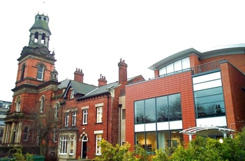

Leeds is roughly in the centre of Britain, with good rail and road connections across the country. The University address is:
University of Leeds,
Leeds,
West Yorkshire,
UK
LS2 9JT
Any problem finding the venue on the day, please phone +44 (0)113 34 33300.
Details of how to get to the University by plane, road, and rail can be found here. If you fly into Manchester Airport, there is then a simple train link from the airport to Leeds. If you fly into Leeds/Bradford, there is a bus or you can get a taxi (there isn't a bus direct to the University, but buses from Stand 1 go to City Square (check specific buses), which is walking distance and near to the taxi rank by Leeds station). Car hire is available at both airports, though isn't needed unless you want to travel beyond the conference. The city is also around two hours train journey from London (although this can be quite expensive if not booked in advance: see below for a booking site).
Once in Leeds, the University is easy to find by walking, or by getting a taxi to The Parkinson Building, University of Leeds (map; see photo). The Parkinson Building is the large white clock tower that can be seen from most of the city. Registration will be in the Parkinson Building. The main conference will be in the School of Music, a distinctive building with a golden domed tower, near the Parkinson. There will be staff to direct attendees during the first day. Entrance is through the modern extension to the building (map; see photo).
Train times and tickets are available from any station, but also online from TheTrainLine.com, though you may also want to
think about a Britain-wide pass.
Details of travel, including car hire, from Leeds/Bradford Airport can be found
on their travel website; likewise
Manchester Airport.
Details of buses around Leeds and West Yorkshire can be found at WY Metro.
To organise trains from Europe, see Eurotunnel. For tickets onwards around Europe, see
Rail Europe / SNCF, or for multi-city passes, Eurail.
If you want to visit colleagues in the School of Geography, Computing, or Earth Sciences before or after the conference, please see the Campus Map.
If you are interested in travelling around Leeds and the UK, before or after the conference, we have a page of things to do in Leeds and beyond.
The Parkinson Building

School of Music